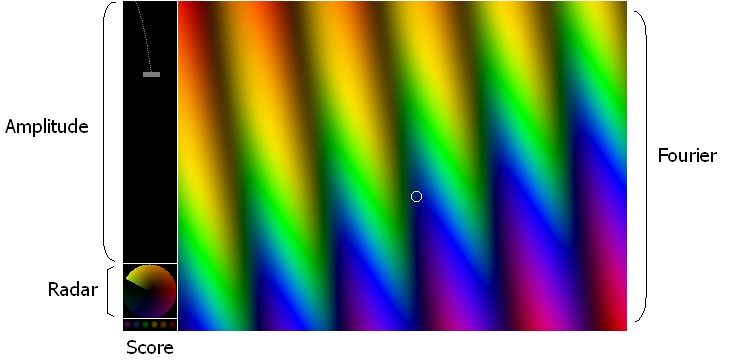
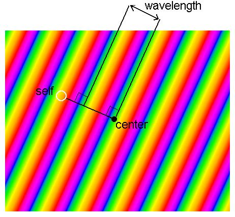
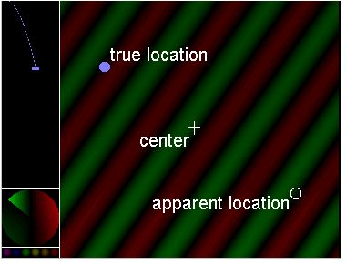

Frequon Invaders 2.2 - Wide Screen Edition
By Arch D. Robison
Last Revision: Dec. 4, 2015.
Windows
Frequon Invaders 2.2 requires a 64-bit Windows OS and a display with at least 1024x768 graphics with 32-bit color.
For 32-bit Windows, use version 2.1.
Frequon Invaders 2.2 has been tested on:
- Intel® Core™ i7-4770 running 64-bit Windows® 8.1
Mac OS X
Any Mac® running OS X 10.7 or later should work. Frequon Invaders 2.2 has been tested on:
- MacBook® Air running OS X® 10.11.1
Windows
- Download the latest Frequon Invaders installer from the Frequon Invaders home page.
- Click on the downloaded frequon*.msi file.
- Go through the installer steps.
Mac OS X
Apple's installer software has proven to be remarkably unreliable,
so Frequon Invaders is provided as a .dmg file from
http://www.blonzonics.us/games/seismic-duck/macos
.
The .dmg file has the following:
| Frequon Invaders | the application |
| LICENSE.rtf | the license |
| README.html | this documentation |
| images | folder of images used by README.html |
You can run Frequon Invaders directly off the .dmg file, or copy it to your Applications directory.
The application is unsigned ("unidentified developer"),
so you may need to use "control click" to run it the first time.
Frequon Invaders is a video game breakthrough:
the action occurs in 2 Dimensional Fourier Space.
Points in normal space become waves in Fourier Space, and vice versa.
Don't worry if you don't know a Fourier from a ferrier.
Playing the game depends upon intuition that you'll develop while playing around with it.
Don't despair if you are lost at first.
The training mode will help you learn.
To start a game: Run ``Frequon Invaders.exe''.
You should see a black window.
From the File menu, select "Begin".
This starts the boot sequence, which after some technobabble, ends in a window that looks like this:

The window is divided into four panels:
- Score
- Shows the number of Frequons annihilated.
In the spirit of ultrageekosity, the numeral is in binary.
If it wraps around (64 annihilations), you win!
Points are not scored when you are in training mode.
- Radar
-
Shows how complex numbers
on the unit circle in the complex plane are mapped onto colors.
The mapping becomes weirder as the game progresses.
- Amplitude
- Shows the amplitude of each launched Frequon as a pastel tick mark.
Each Frequon has a different color.
The amplitude grows as the Frequon descends, and is shown by the horizontal position of its tick mark.
The maximum number of launched Frequons increases as the game progresses, with a final limit of four. The ticks descend in this panel.
The game ends if a Frequon reaches the bottom before you annihilate it.
- Fourier
- Shows your own "self" position in the spatial domain as a small hollow circle.
You can move "self" around with the mouse.
The display also shows "self" and any launched Frequons in the Fourier Domain,
where they become wave patterns.
The crests of the waves relate to a particle position.
Imagine a ray drawn from the center of the panel to the particle.
The crests run perpendicular to this ray, like this:

The wavelength of a particle shrinks as it moves away from the center.
Autogain
The Autogain item on the Display menu controls how the colors are scaled.
With autogain enabled, the colors of the waves are scaled to fit the available color range.
Thus as the Frequon waves gain amplitude, your wave loses (relative) amplitude.
With autogain disabled, the colors are not scaled according to amplitude,
but according to the number of Frequons that might simultaneously attack.
E.g., if there can be at most 2 attacking Frequons,
the colors will be scaled to allocate 1/3 of the range to each Frequon, and 1/3 to your "self".
I recommend keeping autogain on.
Destroying Frequons
As you get close to a Frequon, your wave and the Frequon's wave will approach maximal destructive
interference; i.e., you will see dark bands. These widen as you approach a Frequon.
If you get close, the Frequon's spatial position appears as a solid circle.
If you get really close, the Frequon is destroyed.
Its amplitude shrinks to zero, the circle explodes, and you gain a point.
If all the above sounds confusing, try the intuitive approach.
Scoot the cursor around.
See what happens.
Look for patterns of dark and light bands.
Scoot the cursor perpendicular to the bands.
After a while, you'll figure out how to react or panic.
Unless you dream in complex exponentials, you may be quite flustered the first time you play.
If so, try "Training" mode.
From the File menu, select Training.
This is like playing the game, except there is no scoring, and you can choose various options.
In training mode, there are two extra pulldown menus:
- Invaders
- The Peek option allows you to see where the Frequons are.
The Stationary and Moving options let you pick whether Frequons are stationary or moving.
The 0, 1, 2 etc. options let you pick the number of Frequons.
When set to zero, you see only the wave pattern for yourself.
- Color
- This menu controls the display of complex numbers in the Radar and Fourier displays.
The default is Complex, which shows the full complex values of the wave pattern.
Real shows only the real part, and
Imaginary shows only the imaginary part.
Magnitude shows only magnitude.
Phase shows only phase, which makes playing so difficult that it is not part of the
regular game.
Here's a recommended approach if you are completely lost.
First, try training with 0 Frequons.
Scoot the cursor around a bit and observe how the pattern changes.
Now try 1 Frequon, and use the Peek option to view it.
Scoot the cursor around, and observe how dark bands form when you get close to the Frequon.
Then try with 2 Frequons once you get the hang of it.
Once you have the basics figured out, try it with Moving Frequons,
or with a different Color scheme. One player reports having an easier
time with the Magnitude display instead of the full Complex color scheme.
As the game progresses, various "damage" occurs to your Radar and Fourier display.
For example, you might see only magnitude information (grey scale),
or "lose" a primary color or two, thus reducing phase information.
Another form of damage causes you see see only the real component (red/green)
or only the imaginary component (yellow/blue).
This can lead the unwary player to a position exactly opposite the true location of a Frequon,
as shown below:

Because only the real component is visible,
it will appear that perfect destructive cancellation has been reached,
even though in fact only the real part has been cancelled!
If only the imaginary component is visible, the display is peculiar in a different way:
it appears as if a single wave is present,
as if the Frequon disappeared.
When fooled by either symmetry,
try jumping across to the diametrically opposing point.
I recommend experimenting with these "aliasing" in the Training mode by setting
up 1 Stationary Frequon (with Peek) and observing what happens when
the "self" is at the diametrically opposed position.
Another piece of weirdness at higher levels is partial collapse (horizontally or vertically) of
the Fourier display. If you know anything about how TV tubes work,
it gives a new meaning to "Captain, our horizontal deflector is weakening!"
This section is for people who know what a Fourier Transform is.
This game uses the Hyper Fourier Transform (HFT),
which for a grid of NxN points, runs in time O(N2).
This is significantly faster than the O((N2) lg N)
time required by a Fast Fourier Transform (FFT).
Asymptotics aside,
the FFT requires "all-to-all" data exchange, which inherently hogs memory bandwidth.
In contrast, the HFT has high data locality, and runs almost entirely in the processor's L1 cache.
The HFT is restricted to data sets with O(1) non-zero values[2].
The Frequons are 2D Kronecker deltas that bounce around in the spatial domain,
scaled by the Frequon's amplitude.
The player is a negated Kronecker delta at full amplitude.
These deltas are mapped onto the Fourier domain via the HFT.
The resulting complex function is displayed as colors per the "Radar" panel,
which illustrates the coloring of a unit circle in the complex plane.
Though lacking in commercial polish, it is free, so you shouldn't complain.
Here is a list of known issues and a revision history.
To measure system's HFT single-core performance in Gigaflops, run Ratings->CPU Speed.
The HFT is hand-vectorized via hand-written assembly code using and
Streaming SIMD Extensions (SSE).
It uses dependence breaking techniques to improve performance.
It has been tuned for Intel® CoreTM 2 Duo.
The sounds are mostly done with additive synthesis, combining harmonics with exponential envelopes.
The sounds for a Frequon entrance is a time reversal of its death twang.
The only sound not done by additive synthesis is the "thunk" when the Fourier display breaks,
which is produced by integrating white noise.
The vanity board is protected by a checksum, to prevent cheating via binary editors.
Versions up to 2.1 were written in C++, starting with a 75 MHz Mac Performa.
Version 2.2 is a
rewrite
in Go that is intended to have the look and feel of version 2.1.
It uses custom SSE kernels, wich improved efficiency, that were generated from a Julia script.
If you like Frequon Invaders, you might want to check out my other work
at www.blonzonics.us/games.
To Reach The Author
I welcome comments, and can be reached at:
Distribution:
Frequon Invaders 2.2 is freeware.
This software may be freely distributed as long as it is not modified
and this documentation accompanies it.
Disclaimer: No warrantee expressed or implied.
Use this software at your own risk.
[1] A ferrier is an obsolete term for a ferryman or boatman.
[2] For the mathematical-humor impaired, HFT is a marketing term for a sparse DFT.
Intel, Pentium and Core are trademarks or registered trademarks of the Intel Corporation.
Windows is a trademark of the Microsoft Corporation.
MacBook Air is a trademark of the Apple Corporation.
Frequon Invaders 2.2 is the author's own creation and not endorsed by any corporation.
No orthonormal basis functions were harmed in the making of this game.